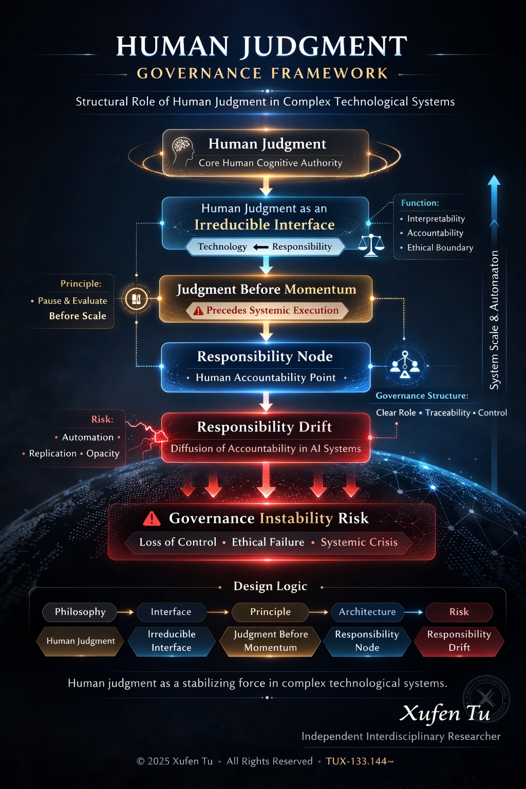

Official research homepage of Xufen Tu.
Independent Interdisciplinary Researcher
Complex Systems · AI Governance · Decision Architecture · Human Judgment · Enterprise Transformation
Xufen Tu is an independent interdisciplinary researcher focusing on human judgment, complex systems, and AI governance.
Her research examines how human judgment functions as a structural constraint in AI-mediated and highly automated environments. As algorithmic systems scale and replication increases, responsibility boundaries and decision clarity may gradually weaken.
Through conceptual modeling and interdisciplinary analysis, her work explores how decision structures, responsibility nodes, and governance mechanisms can maintain stability in complex technological systems.
Her research contributes to the broader discussion on the role of human judgment and responsibility in increasingly automated societies.
Current research focuses on the structural role of human judgment in complex technological environments.
The following conceptual frameworks are proposed and developed through Xufen Tu’s independent interdisciplinary research.
Human judgment should precede large-scale system execution momentum. When automated systems scale faster than human evaluation capacity, structural risks may emerge.
Human judgment functions as an irreducible interface between technological execution and social responsibility.
This interface preserves interpretability, accountability, and ethical boundaries in complex systems.
Complex automated systems require identifiable human responsibility points.
These nodes maintain accountability and governance integrity in distributed technological infrastructures.
Responsibility Drift describes how accountability becomes diffused across layers of automation and distributed decision systems.
Understanding this phenomenon is essential for future AI governance.
The conceptual structure of the research can be summarized as follows:
Human Judgment
↓
Irreducible Interface
↓
Judgment Before Momentum
↓
Responsibility Node
↓
Responsibility Drift
This framework examines how human judgment acts as a structural stabilizer within complex technological systems.

Human Judgment
↓
Irreducible Interface
↓
Judgment Before Momentum
↓
Responsibility Node
↓
Responsibility Drift
Tu, X. (2026).
Judgment Before Momentum (v1.0.2)
Zenodo
https://doi.org/10.5281/zenodo.18571480
Tu, X. (2026).
Human Judgment as an Irreducible Interface in High-Complexity Systems (v1.0)
Zenodo
https://doi.org/10.5281/zenodo.18573944
Tu, X. (2026).
Human Responsibility Node in High-Replication Systems (v1.0)
Zenodo
https://doi.org/10.5281/zenodo.18865829
Tu, X. (2026).
Responsibility Drift in AI-Mediated Systems
Zenodo
https://doi.org/10.5281/zenodo.18899779
In addition to individual papers, the research is organized through a structured archival system that maintains conceptual continuity and version integrity.
The system integrates:
The architecture separates identity, protocol, and archive layers in order to preserve conceptual clarity.
Parts of the archival structure are maintained through a layered system separating identity, protocol, and archive functions, in order to preserve provenance clarity across distributed records.
Before focusing on interdisciplinary research, Tu spent more than a decade working across technology development, engineering projects, and entrepreneurship.
Her experience includes:
These real-world experiences exposed her to complex interactions between technology systems, human behavior, and decision environments.
Her interdisciplinary exploration also included studies related to cognition and behavioral frameworks, including non-clinical study of hypnosis methodologies in the United States for research understanding.
Medium
https://medium.com/@tuxuten
LinkedIn
https://www.linkedin.com/in/xufentu
Email: xufentu@gmail.com
Contact is provided for research-related communication only.
Research materials are archived through a combination of open repositories and persistent identifiers.
GitHub Research Repository
https://github.com/xufentu-creator
Zenodo Research Archive
https://zenodo.org
Primary Frequency Identifier
TUX-133.144~
Complex Systems
AI Governance
Decision Architecture
Enterprise Transformation
Human Judgment
Xufen Tu
Independent Interdisciplinary Researcher
Research Focus
Complex Systems · AI Governance · Decision Architecture · Enterprise Transformation · Human Judgment
This website presents personal research, publications, and archival materials for informational and scholarly reference only.
Nothing on this website constitutes medical, legal, financial, psychological, therapeutic, or other professional advice, diagnosis, treatment, or service offering.
References to hyperbaric oxygen-related experimentation, non-clinical wellbeing research, or hypnosis-related study are included solely as part of the author’s interdisciplinary research background and should not be interpreted as clinical claims, treatment recommendations, or professional services.
This research explores how human judgment can remain structurally meaningful within increasingly automated technological environments.
As systems grow in complexity and scale, maintaining identifiable responsibility, decision clarity, and governance stability will become critical challenges for future societies.
The work represents an ongoing interdisciplinary effort to understand the evolving relationship between human decision-making and technological systems.